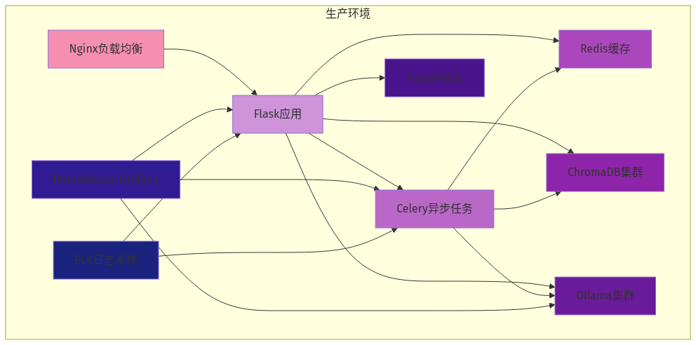

本地大模型知识库系列第12篇 | 生产部署
这是系列的最后一篇，我们将学习如何将本地大模型知识库部署到生产环境。生产部署需要考虑稳定性、安全性、可扩展性等多个方面。

01 使用Docker容器化
创建Dockerfile来构建镜像：
# 使用Python 3.11基础镜像
FROM python:3.11-slim
# 设置工作目录
WORKDIR /app
# 安装系统依赖
RUN apt-get update && apt-get install -y \
build-essential \
gcc \
git \
&& rm -rf /var/lib/apt/lists/*
# 复制依赖文件
COPY requirements.txt .
# 安装Python依赖
RUN pip install --no-cache-dir -r requirements.txt
# 复制应用代码
COPY . .
# 设置环境变量
ENV MODEL_NAME=llama3:8b
ENV DB_PATH=/app/chroma_db
# 暴露端口
EXPOSE 7860
# 启动命令
CMD ["python", "app.py"]# docker-compose.yml
version: '3.8'
services:
knowledge-base:
build: .
ports:
- "7860:7860"
volumes:
- ./chroma_db:/app/chroma_db
- ./documents:/app/documents
environment:
- MODEL_NAME=llama3:8b
- LOG_LEVEL=INFO
restart: unless-stopped
deploy:
resources:
reservations:
devices:
- driver: nvidia
count:1
capabilities:[gpu]02 配置Nginx反向代理
使用Nginx提供静态文件服务和反向代理：
# /etc/nginx/sites-available/knowledge-base
server{
listen 80;
server_name kb.example.com;
location / {
proxy_pass http://localhost:7860;
proxy_set_header Host $host;
proxy_set_header X-Real-IP $remote_addr;
proxy_set_header X-Forwarded-For $proxy_add_x_forwarded_for;
proxy_set_header X-Forwarded-Proto $scheme;
# WebSocket支持
proxy_http_version 1.1;
proxy_set_header Upgrade $http_upgrade;
proxy_set_header Connection "upgrade";
}
# 配置SSL（使用Let's Encrypt）
listen 443 ssl;
ssl_certificate /etc/letsencrypt/live/kb.example.com/fullchain.pem;
ssl_certificate_key /etc/letsencrypt/live/kb.example.com/privkey.pem;
}03 添加日志和监控
添加日志记录和健康检查：
import logging
from flask import Flask
# 配置日志
logging.basicConfig(
level=logging.INFO,
format='%(asctime)s - %(name)s - %(levelname)s - %(message)s',
handlers=[
logging.FileHandler('app.log'),
logging.StreamHandler()
]
)
logger = logging.getLogger(__name__)
# 添加健康检查端点
app = Flask(__name__)
@app.route('/health')
def health_check():
try:
qa = KnowledgeBaseQA()
return {"status": "healthy"}
except Exception as e:
logger.error(f"Health check failed: {e}")
return {"status": "unhealthy"}, 50004 系列总结
恭喜你完成了整个系列！让我们回顾一下所学内容：
📚 系列回顾
• 第01篇：了解了本地大模型知识库的价值和优势
• 第02篇：搭建了Ollama环境并运行了第一个模型
• 第03篇：构建了基于RAG的本地知识库
• 第04篇：使用Gradio创建了Web界面
• 第05篇：学习了系统部署与性能优化
• 第06篇：了解了应用场景与最佳实践
• 第07篇：深入理解了RAG的核心原理
• 第08篇：封装了问答接口
• 第09篇：完善了Web界面功能
• 第10篇：实现了多种性能优化策略
• 第11篇：添加了多模态支持
• 第12篇：完成了生产环境部署
通过这个系列，你已经掌握了从零开始构建一个完整的本地大模型知识库系统的全部技能。希望这些知识能帮助你在实际工作中更好地应用AI技术！
⚠️ 常见问题
1. Docker镜像太大：使用多阶段构建减少镜像大小
2. GPU资源不足：考虑使用云GPU或模型量化
3. SSL证书问题：使用Certbot自动管理证书
4. 服务宕机：配置自动重启和监控告警
—— 系列完结 ——
本地大模型知识库系列第12篇（完）
感谢您的阅读！